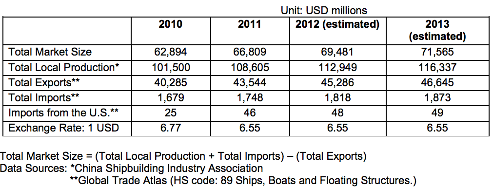

This section covers the use and development of the various sea-related industries, including shipbuilding, ports, pleasure boats, sea communications and transportation, offshore oil and gas, sea-related chemicals and sea fisheries.
China has seen rapid development of its marine industry over the past few years. China has more than 3 million square kilometers of water territory and 32,000 kilometers of coastline, with more than 1,400 harbors and 210,000 cargo ships. As the world's largest exporter, China has become a center of maritime activity, and China's major state-owned shipping and shipbuilding companies are among the worlds largest. According to the Ministry of Land and Resources of the People's Republic of China, the marine industry will gradually become one of the pillars of China's economy.
According to the statistics of Global Trade Atlas, China's total value of ship imports and exports reached $41.9 billion in 2010, of which ship imports accounted for $1.68 billion. Trade volume could reach a historic high of approximately $45 billion in 2011. However, oceanic pollution and the industry's structural imbalances, currency appreciation and cost increases continue to present challenges for the development of the marine industry.